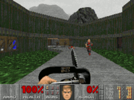

Doom
Doom is a first-person shooter game developed and published by
id Software. Released on December 10, 1993, for DOS, it is the
first installment in the Doom franchise. The player assumes the
role of a space marine, later unofficially referred to as
Doomguy, fighting through hordes of undead humans and invading
demons. The game begins on the moons of Mars and finishes in
hell, with the player traversing each level to find its exit or
defeat its final boss. It is an early example of 3D graphics in
video games, and has enemies and objects as 2D images, a
technique sometimes referred to as 2.5D graphics.
Gameplay
Doom is a first-person shooter presented with 3D graphics.
While the environment is shown in a 3D perspective, the enemies
and objects are instead 2D sprites rendered at fixed angles, a
technique sometimes referred to as 2.5D graphics or
billboarding.[2] In the single-player campaign mode, the player
controls an unnamed space marine—later unofficially termed
"Doomguy"—through military bases on the moons of Mars and in
hell.

Plot
Doom is divided into three episodes, each containing about nine
levels: "Knee-Deep in the Dead", "The Shores of Hell", and
"Inferno". A fourth episode, "Thy Flesh Consumed", was added in
an expanded version, The Ultimate Doom, released two years
after Doom. The campaign contains very few plot elements, with
a minimal story presented mostly through the instruction manual
and text descriptions between episodes.
Release
Id Software planned to self-publish Doom for DOS-based
computers and set up a distribution system leading up to the
release. Jay Wilbur, who had been hired as CEO and sole member
of the business team, planned the marketing and distribution of
Doom. As id would make the most money from copies they sold
directly to customers—up to 85% of the planned US$40 price—he
decided to leverage the shareware market as much as possible.
He believed that the mainstream press was uninterested in the
game and bought only a single ad in any gaming magazine.